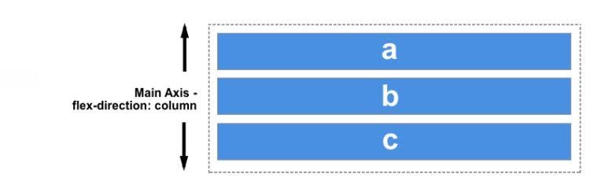
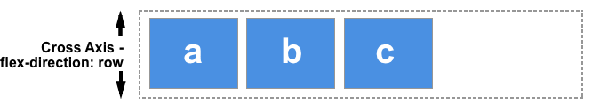
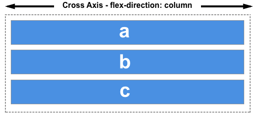
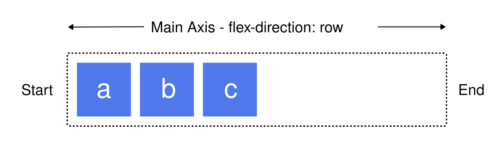

Enviroment variables
Flexbox
Basic concepts of flex
Theflexible box layout module (usually referred to as flexbox) is a one-dimensional layout model for distributing space between items and includes numerous alignment capabilities. This article gives an outline of the main features of flexbox, which we will explore in more detail in the rest of these guides.
When we describe flexbox as being one-dimensional we are describing the fact that flexbox deals with layout in one dimension at a time — either as a row or as a column. This can be contrasted with the two-dimensional model of CSS Grid Layout, which controls columns and rows together.
The two axes of flexbox
When working with flexbox you need to think in terms of two axes — the main axis and the cross axis. The main axis is defined by the flex-direction property, and the cross axis runs perpendicular to it. Everything we do with flexbox refers back to these axes, so it is worth understanding how they work from the outset.
The two axes of flexbox
When working with flexbox you need to think in terms of two axes — the main axis and the cross axis. The main axis is defined by the flex-direction property, and the cross axis runs perpendicular to it. Everything we do with flexbox refers back to these axes, so it is worth understanding how they work from the outset.
The main axis
The main axis defined by flex-direction, which has four possible values:
- row
- row-reverse
- column
- column-reverse
Should you choose row or row-reverse, your main axis will run along the row in the inline direction.

Choose column or column-reverse and your main axis will run in the block direction, from the top of the page to the bottom.

The cross axis
The cross axis runs perpendicular to the main axis. Therefore, if your flex-direction (main axis) is set to row or row-reverse the cross axis runs down the columns.

If your main axis is column or column-reverse then the cross axis runs along the rows.

Start and end lines
Another vital area of understanding is how flexbox makes no assumption about the writing mode of the document. Flexbox doesn't just assume that all lines of text start at the top left of a document and run towards the right-hand side, with new lines appearing one under the other. Rather, it supports all writing modes, like other logical properties and values.
You can read more about the relationship between flexbox and writing modes in a later article; however, the following description should help explain why we do not talk about left and right and top and bottom when we describe the direction that our flex items flow in.
If the flex-direction is row and I am working in English, then the start edge of the main axis will be on the left, the end edge on the right.

If I were to work in Arabic, then the start edge of my main axis would be on the right and the end edge on the left.

In both cases the start edge of the cross-axis is at the top of the flex container and the end edge at the bottom, as both languages have a horizontal writing mode.
After a while, thinking about start and end rather than left and right becomes natural, and will be useful to you when dealing with other layout methods such as CSS Grid Layout which follow the same patterns.
The flex container
An area of a document that is laid out using flexbox is called a flex container. To create a flex container, set the area's display property to flex. When we do this, the direct children of that container become flex items. You can explicitly control whether the container itself is displayed inline or in block formatting context using inline flex or inline-flex for inline flex containers or block flex or flex for block level flex containers.
Initial values
As with all properties in CSS, some initial values are defined, so the contents of a new flex container will behave in the following way:
- Items display in a row (the flex-direction property's default value is row).
- The items start from the start edge of the main axis.
- The items do not stretch on the main dimension but can shrink (a flex-item's flex-grow property's default value is 0 and its flex-shrink property's default value is 1).
- The items will stretch to fill the size of the cross-axis (the align-items property's default value is stretch).
- The flex-item's flex-basis property's default value is auto. This means that, in each case, it will be equal to the flex item width in horizontal writing mode, and the flex item height in vertical writing mode. If the corresponding width/height is also set to auto, the flex-basis content value is used instead.
- All the items will be in a single row (the flex-wrap property's default value is nowrap), overflowing their container if their combined width/height exceeds the containing element width/height.
The result of this is that your items will all line up in a row, using the size of the content as their size in the main axis. If there are more items than can fit in the container, they will not wrap but will instead overflow. If some items are taller than others, all items will stretch along the full length of the cross-axis.